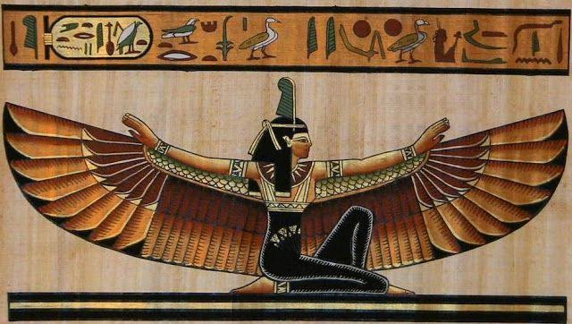
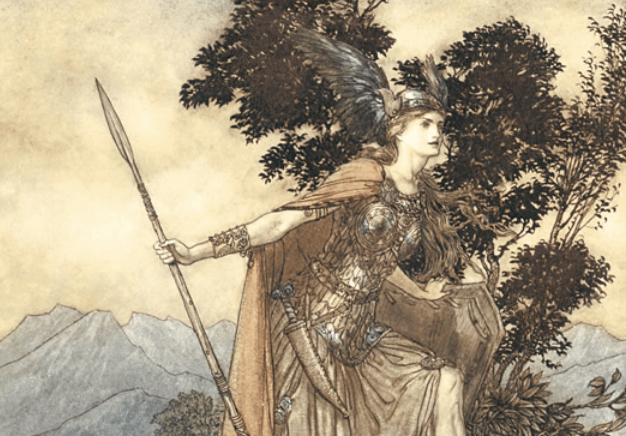
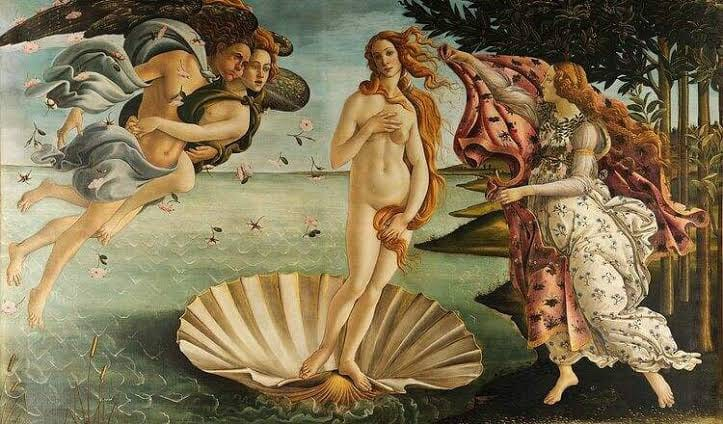

Mitologia Egípcia
Aqui contaremos sobre as principais mulheres da mitologia egícpia, seus feitos e algumas relações com as mulheres daquele tempo.
A mitologia diz muito sobre a sociedade da época, ajudando a mostrar a forma que eles viam o universo e
seu surgimento, e, além disso, mostra também o jeito que esses povos olhavam entre si.
Nesse site, iremos apresentar algumas mitologias, destacando a forma que eles representavam o feminino e
mostrar como essas figuras se relacionavam com a forma que as mulheres eram vistas.

Aqui contaremos sobre as principais mulheres da mitologia egícpia, seus feitos e algumas relações com as mulheres daquele tempo.

Aqui apresentamos as principais figuras femininas da mitologia nórdica, analisando a participação das mulheres e sua relação com o dia a dia das mulheres

Aqui apresentamos uma análise sobre como os mitos gregos serviam para justificar a misoginia existente na época
template